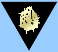

"The Acutron" and Other Admin Aliases
Mail and headline articles from the admins will have one of three signatures. If it doesn't have one of these signatures, perhaps someone is trying to spoof you . . .
The Acutron
This immense supercomputer, orbiting a world at an undisclosed location, is the brain behind the universal ComNet communications system, and remains neutral in the battle for the Galaxy . . . it will faithfully serve the ultimate winner. In the meantime, any ComNet information originating from "Acutron" can be taken as true.
games@ultracorps.com
This signature shows up in automatic e-mail from the system - for instance, to tell you that a game has started or one of your games has ticked.
Personal Aliases

Mail sent from an admin's own UltraCorps account will use his own game name. To make sure that the person writing to you is really an admin, look at his Profile page and see if it has the Admin Badge, which shows the Acutron icon on a black background.
Sludge Spawn
This is the enemy of all that is good and true in the UltraCorps world. If you get mail from the Sludge Spawn, look out.
<--->